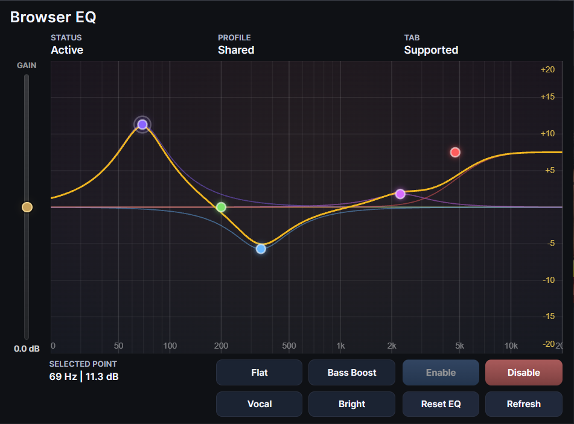

Parametric EQ graph
Add points directly on the graph and move them visually to change frequency and gain in a natural way.
Browser EQ is a visual parametric equalizer for browser tabs. Adjust frequencies directly on the graph, use built-in presets, and control output gain from a clean extension interface designed for fast, everyday sound shaping.

Browser EQ gives you direct, visual control over browser audio without forcing you into a large or confusing interface. It is built around a practical browser workflow: open a tab, shape the sound, and keep moving.
Add points directly on the graph and move them visually to change frequency and gain in a natural way.
Start with ready-to-use tonal profiles such as Flat, Bass Boost, Vocal, or Bright for faster everyday tuning.
Compensate for tonal changes with a dedicated output gain control so the final level stays comfortable and balanced.
Browser EQ is designed to keep the equalizer workflow simple and understandable, even for users who are not used to studio plugins.
Browser EQ works with supported browser tabs that allow audio capture. If a page cannot be captured, the popup clearly shows that state instead of failing silently.
Click on the graph to create a point, then drag it to shape the curve. This makes tonal changes easier to understand than working with abstract numeric controls alone.
Built-in presets let you move quickly from a neutral curve to a more focused sound profile without building every adjustment from scratch.
Output gain helps you compensate for boosts and cuts so the result feels controlled and usable, not just louder or thinner.
A parametric equalizer is more flexible than a simple bass/treble control. Instead of changing broad frequency ranges with fixed knobs, it allows you to target specific areas of the spectrum and shape sound more precisely.
Browser EQ needs access to specific browser permissions in order to process audio from supported tabs and save your settings.
Browser EQ is designed as a local browser-side tool. Replace this paragraph if your final release adds any remote services or external data handling.
Quick answers to the most common questions about setup, supported pages, and expected behavior.
If you run into a problem, please include enough detail so the issue can be reproduced and fixed faster.
You can send bug reports by email or through an issue tracker.
If Browser EQ was useful to you and you want to support future updates, you can do it here.
Crypto support is completely optional and does not affect the availability or functionality of the extension.